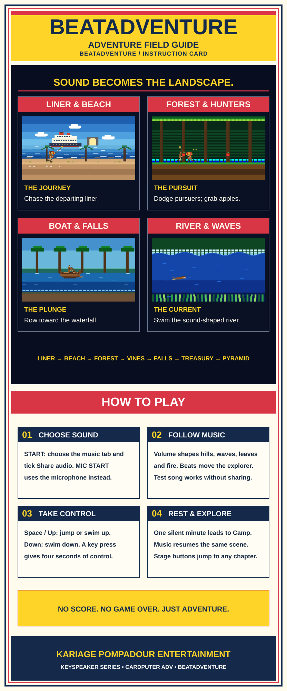
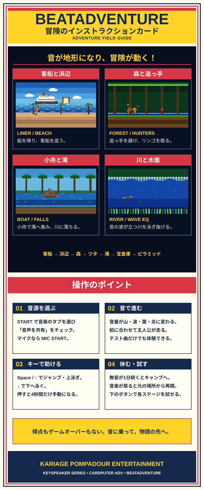

KEYSPEAKER SERIES · CARDPUTER ADV
BeatAdventure WEB DEMO
A pixel adventure shaped by the music you play. Volume builds the landscape and equalizers become waves, leaves and fire on the Cardputer ADV's 240×135 screen.再生中の音楽が地形をつくるピクセル冒険活劇。音量の山やグライコが波、木の葉、炎に変わる Cardputer ADV の240×135画面をブラウザで楽しめます。
Choose a sound source to sync the adventure.音源を選ぶと冒険が音に反応します。
AUDIO
START captures sound from a tab: select the tab that plays music and check “Share audio”. MIC START uses the microphone. Test song works without either. The audio is analysed in your browser and is not uploaded.START で音楽を再生しているタブを選び、「音声を共有」にチェックしてください。MIC START はマイク、テスト曲は共有なしで試せます。音はブラウザ内で解析し、送信しません。
Stop screen freezes the picture and story. Disconnect audio only releases the sound source.「画面を停止」は映像と物語を止めます。「音声の接続を解除」は音源だけを切り離します。
no sound yet
TRY A STAGEステージを試す
Jump to any chapter. The story normally moves between scenes on its own.どの章からでも試せます。通常の冒険では物語に沿って自動で次のシーンへ進みます。
STORY SHORTCUTS物語のショートカット
KEY GUIDE操作ガイド
The explorer moves on his own. Press a key to take control for four seconds. After a minute without sound, he rests at Camp until the music returns, then resumes where he left off.主人公は自動で進みます。キーを押すと4秒間操作できます。音が1分以上止まるとキャンプで休み、音楽が戻れば元の場所から再開します。
ADVENTURE FIELD GUIDE冒険のインストラクションカード
The journey, sound controls and keys at a glance. Tap the card to open it full size.旅の場面と音源・キー操作を一枚にまとめました。押すと大きく見られます。

